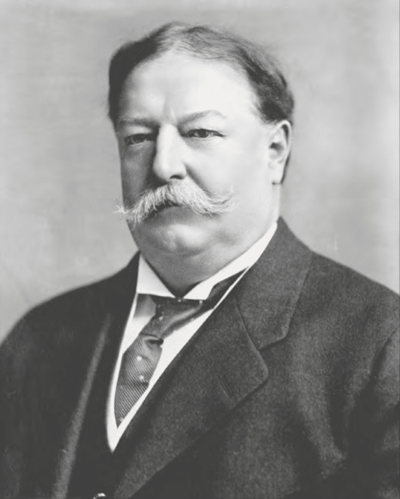

Photo Taken of William Taft
This websites a home to information about the 27th president;
WIlliam Howard Taft. Theres tons of information form His early life
right up until his death. the first little bit of information can be
fund below, including a fun fact, his birthday and deathday!
Birthday: September 18th, 1857
Deathday: March 8th, 1930
Fun Fact: Legend has it that Taft, who weighed over 300 pounds
during his presidency, once got so stuck in the White House bathtub
that it took six people to pull him out. Yes, six. But the reality
is that this likely never happened.